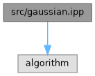
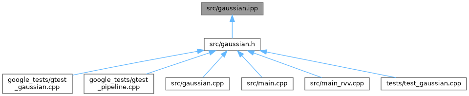

- Generated by
 1.9.8
1.9.8
|
RISC-V Canny Edge Detection
|
Template implementation for a 5x5 Gaussian blur filter. More...
#include <algorithm>

Go to the source code of this file.
Functions | |
| template<typename T_in , typename T_out , typename T_acc > | |
| void | gaussian_blur_5x5 (const T_in *input, T_out *output, int width, int height) |
| Applies a 5x5 Gaussian blur to a 2D image array. | |
Template implementation for a 5x5 Gaussian blur filter.
| void gaussian_blur_5x5 | ( | const T_in * | input, |
| T_out * | output, | ||
| int | width, | ||
| int | height | ||
| ) |
Applies a 5x5 Gaussian blur to a 2D image array.
| T_in | Data type of the input image pixels (e.g., uint8_t). |
| T_out | Data type of the output image pixels (e.g., uint8_t). |
| T_acc | Data type used for accumulation to prevent overflow (e.g., int32_t). |
| input | Pointer to the input image buffer. |
| output | Pointer to the output image buffer where the blurred image will be stored. |
| width | Width of the image in pixels. |
| height | Height of the image in pixels. |